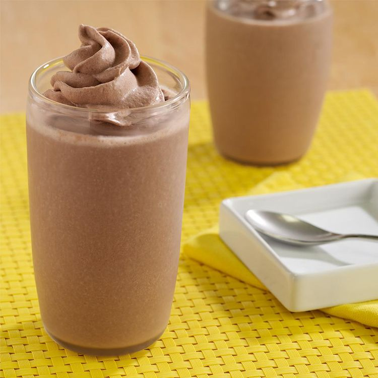

Chocolate Peanut Butter Banana smoothie
Home

A smoothie recipe made with chocolate pudding, ripe bananas and creamy peanut butter for an indulgent treat.
Details
- Prep time : 5 min
- Additional time : 5 min
- Total time : 10 min
- Servings : 4
- Yield : 4 glasses
Nutritional facts
- Calories : 222
- Fat : 8g
- Carbs : 30g
- Protein : 4g
Ingredients
- 2 (3.25 ounce) cups Snack Pack® Chocolate Pudding
- 2 tablespoons Peter Pan® Creamy Peanut Butter
- 2 large ripe bananas, cut into pieces
- ¾ cup reduced fat (2%) milk
- 1 cup ice cubes
- Reddi-wip® Chocolate Dairy Whipped Topping
Steps
- Gather all ingredients.
- Place all ingredients, except Reddi-wip, in blender container; blend until smooth.
- Divide evenly among 4 glasses.
- Top each with 1 serving Reddi-wip.
- Serve immediately.
Your recipe is completed and your smoothie is ready. Enjoy this delicious meal and share it with your friends and family.